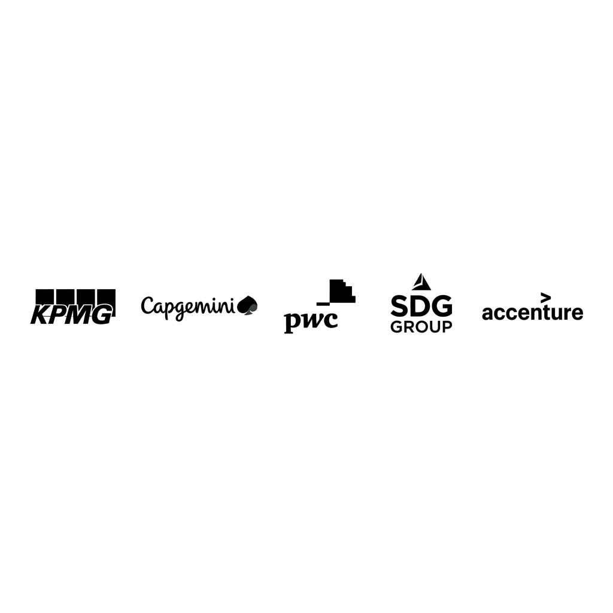

Estrategia sobre tecnología
Diseño estrategias que alinean tus datos con los objetivos críticos del negocio, no con la herramienta del momento. Sin retorno claro, no hay proyecto.
Los técnicos no hablan con el negocio. El negocio no entiende a los técnicos. El dato sin gobierno es ruido y la IA sin estrategia es coste.

Estudié Derecho y ADE conjuntamente porque quería entender cómo funciona el mundo jurídico y el de negocio antes de especializarme. Cuando encontré el mundo de los datos, sentí que podía aportar algo distinto: no solo analizar números, sino entender qué hay detrás de ellos.
He trabajado en proyectos de datos e IA en KPMG, Capgemini, PwC, SDG Group y Accenture en distintos sectores como salud, banca, energía y retail. Lo que me he llevado no es solo experiencia técnica: es entender por qué fallan los proyectos de datos. La mayoría de las veces no es un problema de tecnología, es de estrategia, gobierno o alineación.
Y en un momento en que el RGPD y el AI Act están redefiniendo las reglas, tener criterio jurídico ya no es un añadido, es parte del trabajo.
Doble Grado en Derecho y ADE
Universidad de Alcalá
Máster en Big Data & Business Analytics
Universidad de Alcalá
MBA en Dirección de Empresas
EAE Business School

Cómo trabajo
Diseño estrategias que alinean tus datos con los objetivos críticos del negocio, no con la herramienta del momento. Sin retorno claro, no hay proyecto.
Los datos solo son activos si son fiables. Establezco marcos de gobierno del dato — conformes con RGPD y AI Act — para que tu organización actúe sobre certezas y escale sin riesgo regulatorio.
Implementar IA sin gobierno del dato es construir sobre arena. Acompaño a las empresas a adoptar soluciones de IA que son útiles, trazables y conformes con el AI Act — no solo innovadoras.
Una organización sanitaria necesitaba definir su estrategia de datos con la normativa europea del Espacio Europeo de Datos Sanitarios como marco de referencia. El reto no era solo técnico — era entender qué implicaba esa normativa para su modelo de gestión de la información. Combinando análisis estratégico (PESTEL, DAFO) con criterio jurídico y metodología técnica, definimos una hoja de ruta que alineó sus capacidades actuales con los requisitos que se avecinaban.
Una empresa necesitaba implementar soluciones de IA en varias áreas de negocio. El problema de fondo era que los datos no eran fiables ni estaban gobernados. Lideré un equipo multidisciplinar para establecer primero las bases de calidad y gobierno del dato, y sobre esa base construir las soluciones analíticas. Sin ese orden, la IA no habría funcionado.
Un departamento de auditoría interna necesitaba modernizar sus procesos de control y gestión de riesgos. Desarrollamos modelos predictivos — Random Forest, XGBoost y LightGBM — para identificar patrones de riesgo y anticipar situaciones críticas antes de que se materializaran. El resultado fue un sistema de detección temprana que permitía priorizar los casos de mayor impacto y orientar los recursos de auditoría donde realmente importaba.


Si tienes un proyecto de datos o IA que no está avanzando como esperabas, o quieres un diagnóstico honesto de por dónde empezar, escríbeme.
Enviar mensaje